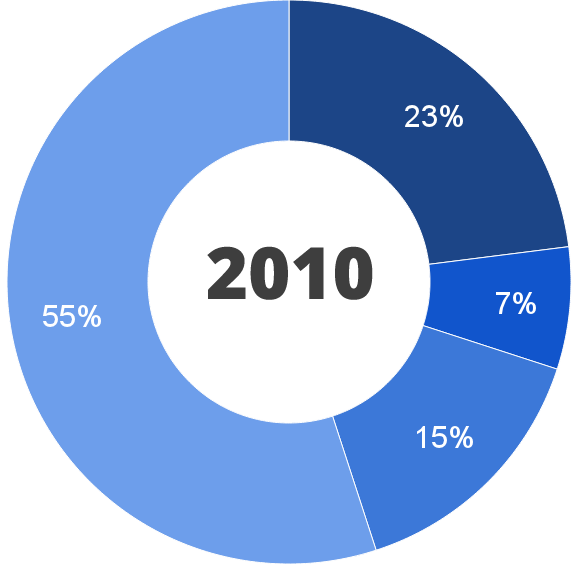
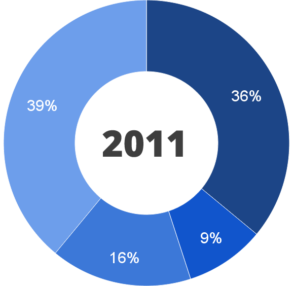

Cloud-
Computing
_________________________________
Steven Helmis
Vielzahl an
Definitionen
"Cloud Computing beschreibt einen internetzentrierten Entwicklungsansatz, bei dem ein Anbieter komplexe Leistungen aus Soft- und Hardware in Form eines abstrakten Dienstes bereitstellt. Speicher, Rechenzeit oder komplexere Dienste können über festgelegte Schnittstellen abgefordert werden, wobei es keine Rolle spielt, auf welcher Hardware diese letztendlich ausgeführt werden."
"Beim «Cloud-Computing» werden Speicherplatz, Rechenkraft, Programme und andere computergestützte Dienste nicht mehr auf einem eigenen lokalen Rechner bereitgehalten, sondern als Dienstleistung über das Internet. Der Begriff «Cloud» (Wolke) leitet sich von schematischen technischen Darstellungen dieser Dienste ab, bei der die einzelnen Services als Kreise gezeichnet werden, die zusammen dann ein Wolkensymbol ergeben."
"Cloud-Computing bezeichnet das dynamisch an den Bedarf angepasste Anbieten, Nutzen und Abrechnen von IT-Dienstleistungen über ein Netz. Angebot und Nutzung dieser Dienstleistungen erfolgen dabei ausschließlich über definierte technische Schnittstellen und Protokolle. Die Spannbreite der im Rahmen von Cloud-Computing angebotenen Dienstleistungen umfasst das komplette Spektrum der Informationstechnik und beinhaltet unter anderem Infrastruktur (z.B. Rechenleistung, Speicherplatz), Plattformen und Software."

aktive Nutzer
1.000.000.000
mobile Zugriffe
600.000.000
hochgeladene Fotos
219.000.000.000

Accounts
465.000.000
175.000.000
Tweets jeden Tag
Zugriff
10 % über einen Client
16 % über eine mobile App
64 % über twitter.com
Cloud
Typen
Private-Cloud
innerhalb einer Organisation
Public-Cloud
für die breite Öffentlichkeit
Hybrid-Cloud
Kombination aus beiden
Cloud-Service
Infrastructure as a Service
IaaS
virtualisierte Hardware-Ressourcen
"Bei IaaS werden IT-Ressourcen wie z. B. Rechenleistung, Datenspeicher oder Netze als Dienst angeboten. Ein Cloud-Kunde kauft diese virtualisierten und in hohem Maß standardisierten Services und baut darauf eigene Services zum internen oder externen Gebrauch auf."
INHALT
Grund und Gebäude
Strom- und Notstromversorgung
Wachschutz
Instandhaltung & Tests

Platform as a Service
PaaS
Infrastruktur mit Schnittstellen
Zugriffskontrolle - Datenbankzugriff
"Bedarfsorientiere Bereitstellung von Plattform-IT-Ressourcen nach dem Konzept von Everything as a Service (EaaS). Diese Ressourcen zeichnen sich dadurch aus, dass sie eine Plattform für den Betrieb von Anwendungen und oft verwendete Anwendungsfunktionalität bereitstellen."
Bereitstellung von
Entwicklungsumgebung
Schnittstellen
Datenbankzugriffe
Skalierung

Software as a Service
SaaS
Auswahl an spezieller Software
Kontakt- Content-Management
"Software as a Service (SaaS) ist ein Modell, mit dem Software über das Internet bereitgestellt wird. Anbieter von Software as a Service stellen nicht nur die Applikationen zur Verfügung, sondern übernehmen auch Wartung und Administration."
Angebot
betriebswirtschaftlicher
oder
redaktioneller
u.a.
Software


Nutzung Cloud-basierter Service
in Unternehmen (Ernst & Young)
 
pro & contra
Kosteneinsparung
Flexibilität
Verbesserte Effizienz der
IT
und
Sicherheit
Skalierbarkeit
lässt sich an Unternehmensgröße anpassen
Verbessert betriebliche
Zusammenarbeit
pro & contra
unsichere Rechtslage
Datenschutz
Kostenaspekte
Sicherheit
Steven Helmis CTO & CoFounder
Präsentation erstellt mit impress.js von John Polacek